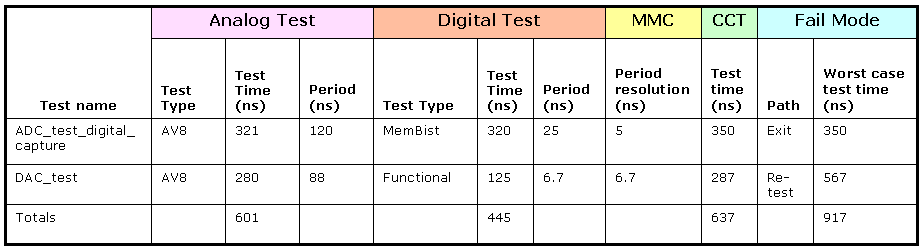

Making a CCT Plan
The process described in the preceding sections achieves the following:
- The two separate pin configurations were merged into one by implementing a multi-port setup in which the pins for the two cores were defined as separate ports.
- The timing files were merged and new specifications for multi-port timing were created.
- The vector files converted into port labels and, with a common pattern master file, were loaded as multi-port bursts.
The test program at this point is a serial multi-port test program with sequencer data exercising only one of the two cores at a time.
The next step is to combine all possible settings to receive the benefit of test time reduction and/or the emulation of system level operation.
This is where the CCT plan is utilized. The CCT plan should help you to decide on the best strategy for combining the test program into one giving you the minimum test times while maintaining a solid test regime.
Ideally, a CCT plan is based on the business reasons for the application of CCT. It outlines the frequency settings in the timing file, it reflects the sequencer data settings, and it provides an estimate on the expected savings that can be used to justify the additional efforts in test development. It also defines the failing path of a CCT execution.
The following table shows an example of such a plan:

In this plan:
- There is a combination of analog and digital tests.
- The CCT column, which includes the assigned overhead in CCT, is based on the tester's behavior related to analog test settings.
- The MMC column shows the potential use of Multiple Master Clocks (MMC).
- The Fail Mode column shows which results lead to worst case settings for example, requiring a re-test).
On the basis of your plan, you can decide on the strategy for merging your serial multi-port test program into a single multi-port test.
The section (Convert Test Functions to Test Methods) describes how to do this, by converting from your single port Test Functions to multi-port Test Methods.
Functional changes
- Introduced before SmarTest 6.3.2